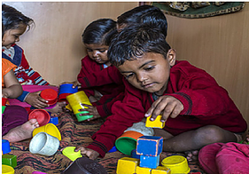

January 09, 2017|MC Team,
We ask a question to elicit information. Typically. Of course, the question could be rhetorical, asked only to make a point, not receive an answer. The question could also be a loaded one, with an imputed answer, leaving the addressee without much choice. Anchors of our news channels love doing that! Without a doubt, the most honest questioning comes from children. No hidden agenda there, simple curiosity.

"Sawaliram” is a name familiar to many who went to school between 1975 and 2000 in the Hoshangabad district of MP. An integral component of the Hoshangabad Science Teaching Programme, Sawaliram made his appearance in Sandarbh, a magazine on science and education published by the Eklavya Foundation. He is a fictional character who answers children’s questions on everything under the sun and encourages that questioning attitude, so critical to learning.
A Sawaliram Sampler: 1. Can we really see (observe) a mirror? 2. If you wash something in water it gets rid of bad smells. A fish always lives in water and yet it smells all the time. Why? 3. Is the crow really kana – one-eyed? Then why does he quickly fly away when you throw a stone at it from either side? I have tried, I know. 4. If you heat a metal disc with a hole in the middle, will the hole increase or decrease in size? 5. You can distinguish between a married and a widowed woman by just looking at her. Is there such a sign for men?
He asked the wrong questions The death of Socrates was the legal consequence of asking politico-philosophic questions of his students, from which resulted the two accusations, of moral corruption and of impiety. At trial, the majority of the dikasts (male-citizen jurors chosen by lot) voted to convict him of the two charges; then, consistent with common legal practice, voted to determine his punishment, and agreed to a sentence of death, to be executed by Socrates’s drinking a poisonous beverage of hemlock.
Have you, by any chance, figured out the answer to any of the questions above? Our favourite is the fifth one. A perfectly innocent question to which the short answer is ‘No’. The long answer – since the short one is most likely to be followed by a ‘Why’ – would be very long, and very complex. It will test your own assumptions, beliefs and values and, perhaps, make you squirm in your seat.In fact, with this kind of question, in a stimulating, open environment, who knows where the discussion might go?
The Curious Case of Questioning Children Children are born curious. They have a question for everything they see and experience. You will run out of answers much before they run out of questions. Their endlesssearch to make ‘sense’ of the world makes them explore, question, and wonder, and by doing so, they discover and they learn.Please go to our blog post on Xplore, Xperience and Xpress … So this is how children learn: by turning the light switch on and off, over and over again, the toddler is learning about cause and effect. By placing a cube of ice on the open palm and letting it slowly melt away the child is observing changing shapes and forms. Many adults have this childlike quality: to show curiosity, to explore through new experiences and discover the joys of life in small things.
That would be exactly like the Socratic method (a method of inquiry introduced by Socrates, Greek philosopher and thinker of 470-399 BCE, and first described by his equally famous student, Plato, in the Socratic Dialogues)wherein the teacher is not the know-it-all sage who is filling the blank minds of a passive student body. Rather it is a dialogue in the truest sense – open-ended, honest and equal. The students and teachers, both, question and attempt answers. There is no pre-determined lesson plan and, hence, no power point presentation. Or even a hidden agenda in terms of an end point towards which the teacher steers the conversation
Questions asked by children often evoke delight or pride or nervous laughter,for that matter (since 9 out of 10 times we won’t have a clue, much less a cogent answer). More often than not the questions will cause discomfort (in the Socratic method it’s called ‘productive discomfort’!), and we, as parents or teachers, will have a variety of excuses to deem such questions ‘inappropriate’: the time is not ripe;it is against our traditions/values; it is not in the interest of the child; etc.We do disservice to the children by being evasive, patronizing or opaque. We may end up, inadvertently perhaps, creating an environment in our families and schools and, by extrapolation, public institutions, where dissent and debate are not encouraged or even frowned upon.
As adults we need to learn from our children – to be open-minded, interested, curious, constantly seeking to extend our world – and keep the inner child alive. We need to keep the questions flowing in multiple forums - our families, neighbourhoods, schools, panchayats, state assemblies and Parliament. In fact the right to question or the right to know has been institutionalized in none other than the Right to Information. So, in the spirit of this blog, here are some food-for-thought questions: Why do children love to play with a boring, mono-coloured, black TV remote control or cellphone, despite the presence of colourful toys? Why does a child try to pick up an apple off the page of a magazine (with a life size photograph of an apple)? Why do children love to open drawers and cabinets, pulling out everything that’s inside? Why is Mommy’s Make – up so attractive? Why do children play Make Believe with friends? Why? Why? Oh why? In the true spirit of Socratic dialogue, however, please come back to us with more questions.